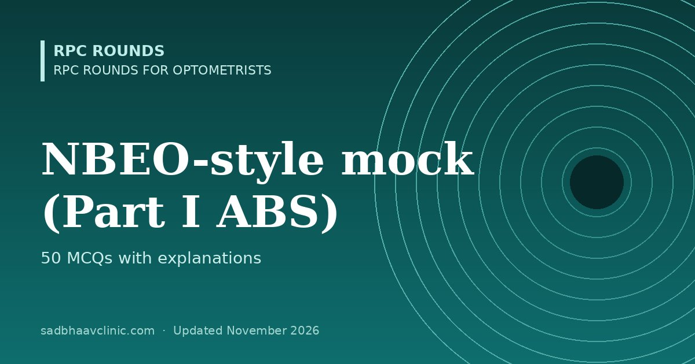

Last updated: November 2026
A 50-question practice test in the style of NBEO Part I (Applied Basic Science), for optometrists preparing for US licensure or advanced-standing OD programmes, and for B.Optom students who want to test their basic sciences.
These are original practice questions written for revision; they are not NBEO questions and do not reproduce the official exam format or length. For eligibility and exam steps, see optometry exams abroad.
List the topics you got wrong, open each linked page, and retake the test after a week. Try the other optometry mocks: B.Optom, NBEO-style, OCANZ-style and Gulf licensing.
More free mocks: all mock tests.
📘 Want more exam-ready material? See Most Commons in Ophthalmology on Kindle, or browse all my books.
Looking for an eye specialist in Ahmedabad? Learn about our Eye Department or book a consultation with Dr. Dhaval Patel.